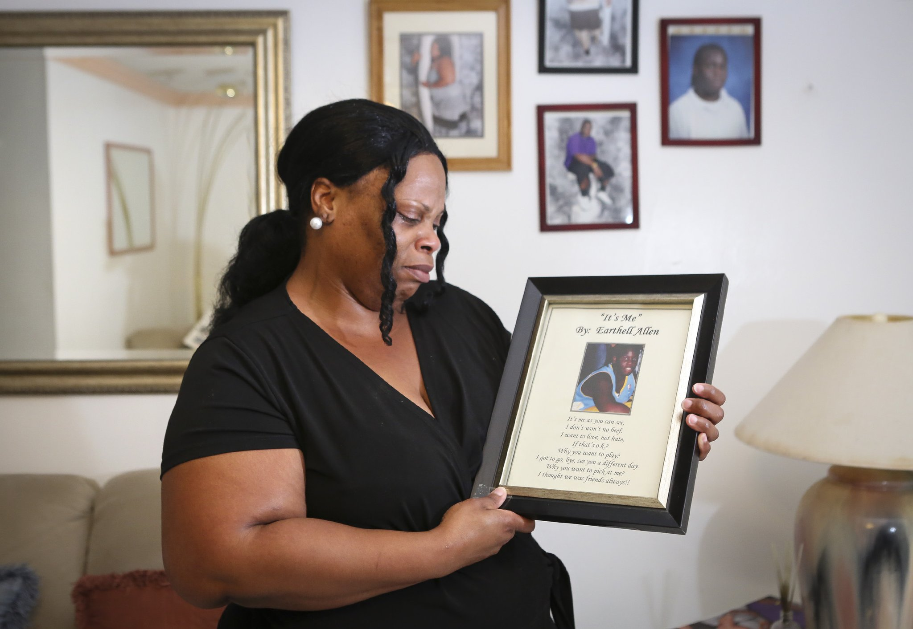
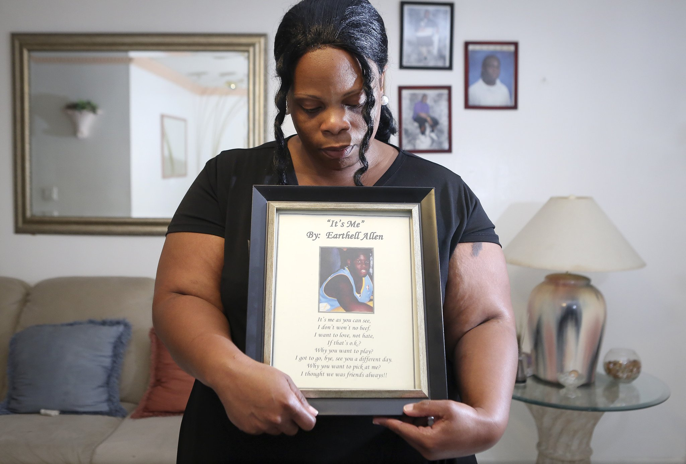
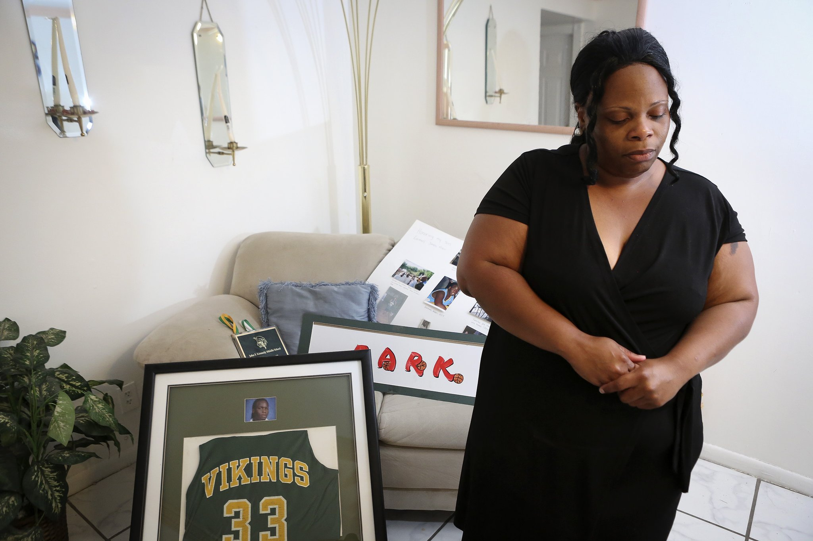
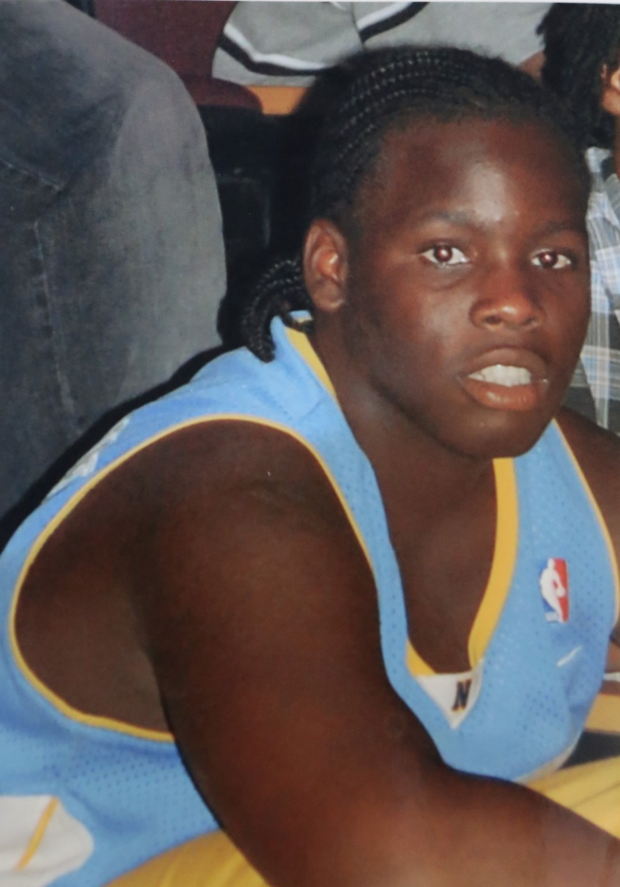
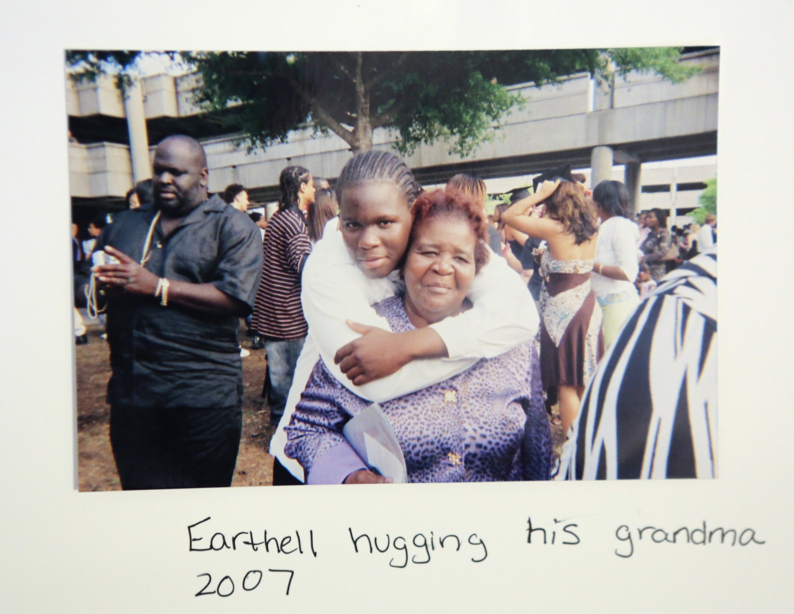

Footpaths dot the corridor
Cuervo’s brown slip-on shoes and a prescription bottle were found about 75 feet north of where the train hit her. The train engineer said Cuervo was standing at the edge of the tracks, looking at something in her hands. She didn’t react when he blew the whistle. — Medical Examiner report 09-1375, condensed

The Cuervo Family (l-r) daughter Andrea, 19, Father Jorge, 51, and daughter Luisa, 24, stand next to the train tracks May 28, 2014, where the family's mother Leonor Cuervo, was killed 2 years ago by a train when coming home from work. The family said Cuervo had gotten off a bus on Dixie Hwy (PLEASE CONFIRM) and proceeded to cross the tracks and pass through a footpath to her apartment complex when she was killed. (Damon Higgins / The Palm Beach Post)
At least twice a day, Jorge Cuervo uses the footpath his wife died on.
His two daughters say they don’t understand why two years after their mother’s death, nothing prevents their father — and their neighbors — from freely crossing the tracks. People use the footpath all the time, they say. And it’s easy to understand why: The path cuts a mile off the trip from their neighborhood to nearby stores and a bus stop.
A hard-to-see “No Trespassing” sign, curled inward, hangs on a concrete post about 100 feet away, facing dense vegetation.
The Cuervos sued FEC in March, claiming it was responsible for allowing access to the track, which it owns.
FEC says Cuervo was at fault because she was trespassing.
The company has posted warning signs along the corridor, Ledoux said.
“It’s no different than somebody crossing across your backyard and tripping themselves and suing you,” he said.
But Pottroff, a lawyer for the Cuervo family in the suit, disagrees.
Because railroad companies must surely be aware of places where people cross, they are tacitly approving that behavior by doing nothing to prevent it, he said. But railroad companies are run by the bottom line, he said. That means it’ll take lawsuits that make it less expensive for them to build barriers than not, he said.
“If it’s cheaper to kill people and blame them for their own death, that’s what the railroads are going to do,” Pottroff said.
More than 170,000 people live within 1,000 feet of the tracks in Palm Beach County. At least X people who have died on the FEC tracks since 2008 lived within X miles of where they died.
Trespassing an ‘epidemic’
In 2003, Tyrone Epps got a ticket for trespassing on the CSX tracks. Nine years later and a mile to the southeast, he died using a well-worn footpath to get home. As the southbound freight train came around a curve, the engineer saw Epps and began braking and blew the whistle. Epps didn’t react.
— Medical Examiner report 12-0251 and West Palm Beach Police Department report 03-14030, condensed
In XX minutes, XX people crossed the footpath where XXXXX died. It was around 6 p.m. on a Friday, and many of them said they were going home from the bus stop.
“QUOTE,” said person crossing the tracks.
dot the FEC corridor in Palm Beach County. Four of them stand out along the 3/4-mile stretch between railroad crossings in Boca Raton where Cuervo died. Scattered on satellite images like scars from Boca Raton to Jupiter, the paths radiate from bus stops, connect dead-end streets and lead to schools near the tracks.
The Federal Railroad Administration in 2008 chose West Palm Beach as a case study for trespasser prevention after noting that four of the five deaths that year were on a 1.75-mile stretch of Tri-Rail tracks.
Federal researchers saw trespassers and footpaths at 32 places on a 5-mile stretch of FEC tracks in West Palm Beach. In one location, they saw 15 people cross in half an hour, most of them children and teenagers.
In a separate study prompted by All Aboard Florida, a Federal Railroad Administration engineer wrote that trespassing was an “epidemic” along the corridor from Miami to north of West Palm Beach.
FEC rejects fencing
Moreaut Hero, 39, stabbed twice, was trying to beat a freight train just north of a crossing in Boynton Beach, but didn’t make it. A clearly defined footpath connects one dead-end side street to another near where he died. Homes flank the rail line. —Medical Examiner report 09-1375
///Experts say fencing is the best way to prevent people from going on the tracks, and thus the best way to prevent casualties.
The Tri-Rail tracks got 3,000 feet of new fencing in the past two years, installed by the Florida Department of Transportation. The department, which bought the tracks in 1988 for Tri-Rail, constantly evaluates the need for fencing, a spokesman said.
But not the FEC.
If train engineers see large groups of people crossing, they’ll call local police or dispatch one of their own officers, Ledoux said. If the company finds out that there’s a public event near the tracks, such as Moonfest in downtown West Palm Beach, the trains go slower or local police will be posted near crossings.
“We want to be a good corporate citizen,” Ledoux said.
Fencing to prevent trespassing raises more problems than it solves, he said.
People can cut through fences or go around them, for example. Fences also could trap people in the path of a train, as well as prevent workers from reaching the tracks, Ledoux said.
He even turns his opponents’ arguments on them: Fences could disrupt people’s lives by blocking paths they use every day.
“The sad part is that even fencing wouldn’t preclude or prevent any accidents along the corridor,” Ledoux said. “They just won’t.”
Still, he said the FEC would consider installing some fences if local governments approached them about a partnership, but none have in at least the last three years.

Melanie Allen's 15-year old son Earthell was hit by a train in 2008. "He was such a lovely child," she said. She was photographed at home in West Palm Beach Tuesday, June 3, 2014 with a framed poem written by Earthell on the day of his death. "It was a tragedy, and so hard to get past," she said. (Bruce R. Bennett / The Palm Beach Post)

Melanie Allen's 15-year old son Earthell was hit by a train in 2008. "He was such a lovely child," she said. She was photographed at home in West Palm Beach Tuesday, June 3, 2014 with a framed poem written by Earthell on the day of his death. "It was a tragedy, and so hard to get past," she said. (Bruce R. Bennett / The Palm Beach Post)

Melanie Allen's 15-year old son Earthell was hit by a train in 2008. "He was such a lovely child," she said. She was photographed at home in West Palm Beach Tuesday, June 3, 2014 with a framed poem written by Earthell on the day of his death. "It was a tragedy, and so hard to get past," she said. (Bruce R. Bennett / The Palm Beach Post)

Earthell Allen in 2008.

Earthell Allen in 2007.
‹
›
All Aboard Florida has plans to install fencing near its West Palm Beach station to stop people who might be in a hurry to catch the train, but there are no plans to install fencing anywhere else along the corridor.
The FEC has a police officer for every 60 miles or so of railroad, and the officers will tell people to leave the track if they see them trespassing, Ledoux said. Their primary job is not to issue tickets or pursue trespassers.
Pottroff said in some locations, it would be unreasonable to expect people to walk an extra mile. Those places need pedestrian crossings — with gates and flashing lights, just like vehicle crossings.
If the CSX tracks are any example, it is clear that people determined to cross will do so: There are at least eight holes in the state-installed fencing along an eight-block stretch of the Tri-Rail corridor in West Palm Beach.
The state Department of Transportation, however, appears to believe in fencing.
Earthell Allen, 15, was on his way to a friend’s house after buying cookies at King Food, in northern West Palm Beach. Between his friend’s home and the store, a footpath took him across two sets of CSX tracks. He waited on the footpath for one train to pass, but moved forward, seemingly oblivious to an oncoming train. The engineer said he saw Allen try to jump backward off the track before he was hit.
An avid basketball player, he was wearing socks with the NBA logo when he died.
A week after he died, FDOT installed a fence to block the path.
Driver deaths drop sharply
While his passenger made it out of the van just in time, the driver, Allen John Vachon, did not. He had tried to beat a freight train to the FEC crossing at Miner Road in Hypoluxo, the passenger said, but the tires got stuck in the gravel. The train dragged the van 400 feet down the track killing Vachon. He was found bending forward onto the steering wheel, seat belt buckled.— Medical Examiner report 13-0493, condensed
While driver deaths dropped about 72 percent nationally in four decades, pedestrian deaths have dropped only five percent, federal data show.
In the 1970s, the federal government poured hundreds of millions into rail crossing safety, but that did little for people on foot. In 1997, pedestrian deaths surpassed deaths in vehicles, and the gap between them has been widening ever since.
Eleven people have died in Palm Beach County since 2008 after being hit by trains in their cars. Even though cars cross the tracks far more often than pedestrians, the rate of pedestrian deaths in the county is four times higher, at 46.
Critics of All Aboard Florida demand quiet trains, which are more likely to endanger pedestrians, but would require tremendous expense to wall off street crossings.
Not only will there be more trains, but they will be going faster.
In 22 of the 28 deaths on the FEC tracks for which the speed of the train is available, the trains were traveling 50 mph or less.
All Aboard Florida, which would run on the FEC tracks, would create a high-speed passenger service from Miami to Orlando, with a stop in West Palm Beach. The trains will go up to 110 mph, though they’re expected to rarely exceed 60 mph from Miami to West Palm Beach, the company’s environmental assessment says.
Unlike the CSX tracks — which carry the state-owned Tri-Rail passenger service, Amtrak and freight trains — most of the FEC corridor is a single track. The FEC tracks carry 14 freight trains a day, a number that could increase.
All Aboard plans to add a second track. Eventually, a government-run commuter rail service could need two more tracks on the corridor.
To create quiet zones , in which train horns would not be sounded at safeguarded intersections, the FEC has said it is willing to pay XX percent of the estimated $47 million cost of safety improvements.
While the company’s environmental assessment devotes one page to an analysis of increased risk of wildlife mortality, it does not mention the risk to pedestrians.
Suicides preventable, experts say
Late at night, Charslie Septembre, 17, ran out of the bushes into the path of a freight train. Both her arms and a leg were found in gravel about 8 feet from her body, which was under the train. The day before, she had an argument with her parents after she was caught with her boyfriend in a community pool bathroom.—Medical Examiner report 13-0631, condensed
Just under half of the deaths on Palm Beach County’s tracks were suicides.
The homeless man with no next of kin. The 89-year-old woman perpetually worried about her health. The man who stood in front of a train half a block away from his home. Twenty-one since 2008, one of which was less than 500 feet from the spot where Leonor Cuervo died.
Though some city officials claim suicidal people can go to crossings to kill themselves if there’s a fence, research shows that wouldn’t necessarily happen.
Separating a person who wants to kill themselves from the means to do so can prevent suicide without him or her going elsewhere, research shows.
A suicidal person is in an emotional state and thinks the only solution is to kill themselves, said Jill Harkavy-Friedman of the American Foundation for Suicide Prevention. If they can be delayed, the person has a chance to leave that emotional state and become less rigid in their thinking.
A 2013 review of studies on sucide prevention found that restricting access to lethal means was the single most effective way to prevent suicides. Not only that, some of the studies found that restricting access did not increase suicides in other areas nearby.
Barriers: Nobody will build them
After going out with his friends in downtown Delray Beach, Reynaldo Torres, 25, was standing too close to the tracks as the freight train approached. The conductor said he saw four or five people cross, but Torres stopped and motioned to someone on the other side. He was sent “flying” by the train. Two years earlier, a man committed suicide mere feet away from where Torres died. — Medical Examiner reports 11-0125 and 09-0687, condensed
Cities say they don’t install fencing to protect pedestrians because it’s not practical or their responsibility.
In most cases, cities would have to lease land from FEC to install fencing — at a potentially large cost.
“Life is worth that, I’m not disagreeing with that,” said Randal Krejcarek, director of environmental services for Delray Beach. “But you’re looking at the funding available, and you’re trying to address multiple needs throughout the city.”
Fencing wouldn’t be feasible because the entire corridor would need to be fenced, said Phillipe Lafonso, assistant director for Lake Worth public services
“Logistically, it’d be like fencing off the Intracoastal,” Lafonso said.